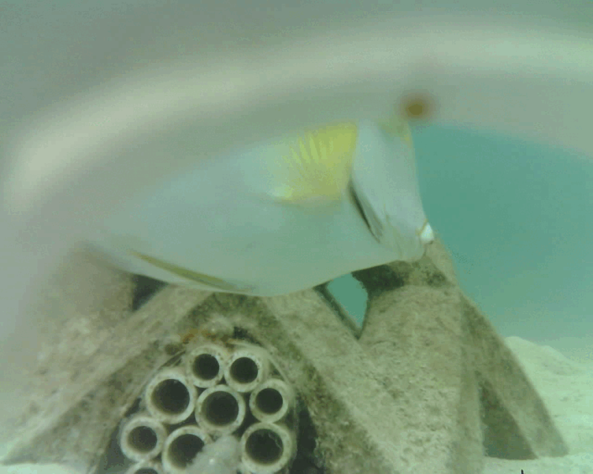
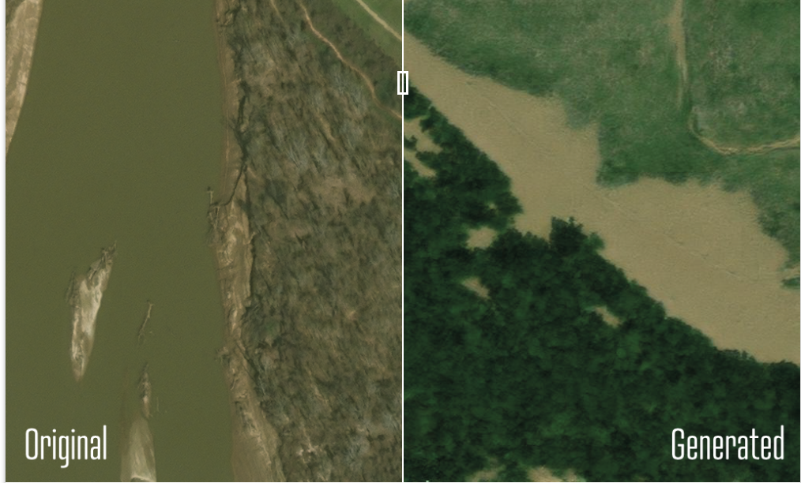
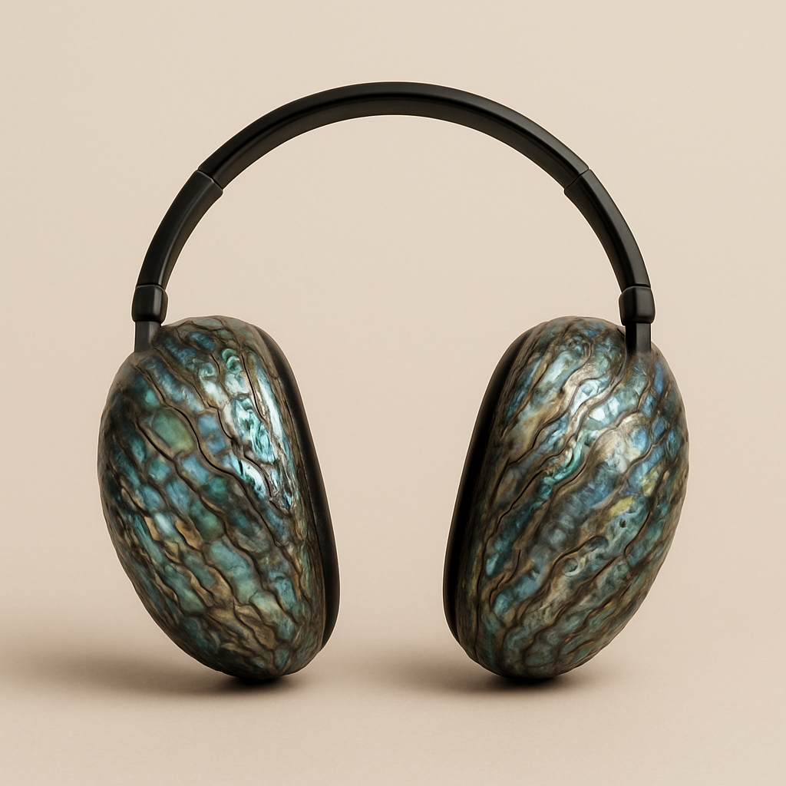

Ongoing Research Learn MoreAcoustic Enrichment Recruits Fish/Coral Larvae
Underwater Autonomous Non-Invasive Visual Monitoring Tools
Seminal Dataset Fine-Grained Visual Categorization Workshop Paper (CVPR21)

2020 GANs for Climate ChangeEarth Intelligence Engine

Polyp Pod Immersive ScienceSciArt Installation Design